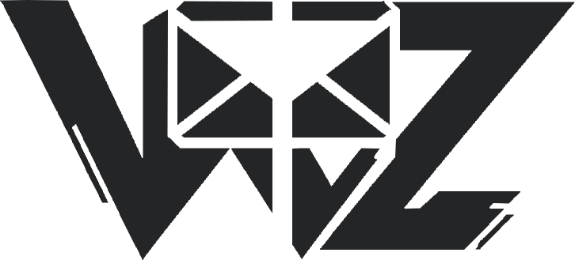
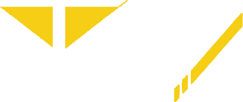
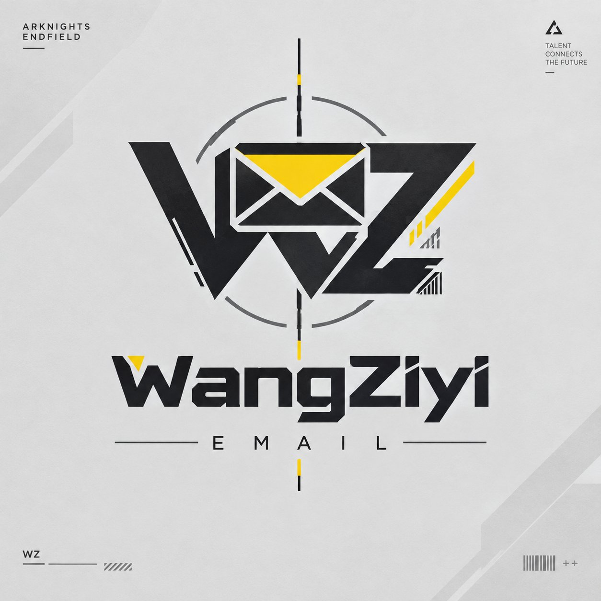
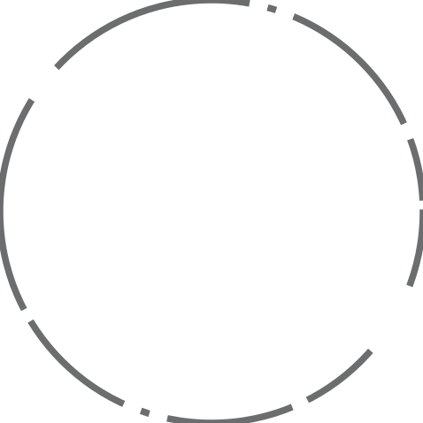
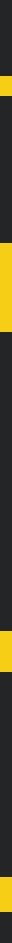
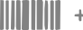
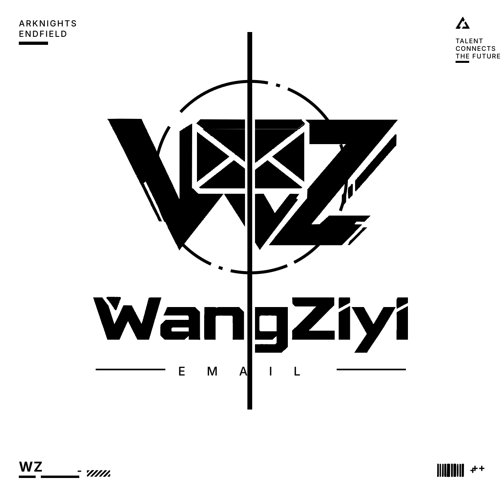

WangZiyi Email从 AI 生成的 KV 里，把能用的东西一样一样拆出来。1254×1254 原图，全部尺寸/颜色为实测值，非目测。
这张稿不能直接用，但能拆出 5 类东西
先说坏消息：这是一张 AI 生成的渲染图，不是设计源文件。三条硬证据——
- 画布 1254×1254，logo 组的中轴落在 x=624，画布中线是 627。差了 3px，设计稿不会这样。
- "WangZiyi" 不是一款真字体。W 的中竖不到顶、a 的字碗、y 的尾巴，三处收笔逻辑互不相同。
- 引导圆不是虚线，是「粗弧段 + 不规则缺口」随机拼接的；中轴上的黄段长度是 20 / 89 / 41 / 35，没有模数关系。
它是 1024 级的位图、无透明通道、元素互相压叠，抠出来就是毛边。正确做法是把它当美术方向（art direction），把里头的系统抽出来重画。
能可靠拆出来的是这 5 类：
| 类别 | 拿到什么 | 可用性 |
|---|---|---|
| ① 色板 | 5 个颜色的精确 hex + 各自的面积占比 | 直接可用 |
| ② 主徽标 WZ | 墨色 + 强调色两层矢量路径（11 环 / 2075 节点） | 可用 IoU 97.2% |
| ③ 字标 WangZiyi | 整词矢量轮廓（12 环 / 1248 节点） | 可用但不可编辑文字 |
| ④ 构造件 | 引导圆、中轴、四角框（三角标 / 条码 / 斜纹 / 加号） | 参数化重建，比原稿干净 |
| ⑤ 图纸网格 / 材质 | 背景斜切面、纸质噪点——提不出来 | 留空 |
五个颜色，黄只占全图 1.00%
这是这次最有价值的一条数据。前面几轮我把黄当主色大面积铺，而 KV 自己的用色比例是：纸 87.1%、墨 11.1%、灰 0.84%、黄 1.00%。
黄的准确值：H 49.3° / S 92.9% / V 96.8%
腐蚀 6px 取内部平坦区（避开抗锯齿）后，黄像素均值 #F7CE12。这个色相落在 Pantone 116 C 一带，是一支偏金的黄，不是纯黄。
--accent:#fff500 是错的
#fff500 色相是 60°，比 KV 的 49.3° 冷了 11°——那是「柠檬黄」，不是这支「金铬黄」。这就是前面几轮怎么调都觉得不对味的一部分原因。建议把 token 统一改成 #F5CE15，logo 与 UI 用同一支。
墨的灰度倾向：±3，落在 JPEG 噪声里，不必纠结
实测墨核心 #242528（R34 G34 B37），B 比 R 高 3；纸底 #dbdbdb 三通道几乎完全相等（Δ ≤ 0.2）。之前文档里「留一点绿 B ≤ R < G」这条规则，在 KV 上看不出可测的证据——但这不重要：它的作用是防止做出死黑界面，不是要做出可见的绿。保留规则，别去追这 3 个数。
官方设计语言文档写纸底是 #e8e8e2（偏暖），KV 实测是 #dbdbdb（纯中性、更暗）。以文档为准——KV 是 AI 渲染，整张图有一层灰度蒙雾。上表保留 KV 实测值是为了记录数据来源，落地请用文档值。
WZ 连字徽标 —— 两层矢量
W 与 Z 是两块实心字形，中间嵌一个开盖信封（黄梯形 = 开口内衬，黑三角 = 盖子投影）。按墨色 / 强调色分两层描摹，因为颜色要能被令牌接管。


为什么分两层，而不是一张带色的图
因为颜色得听令牌的。提取出来的只有几何，颜色回落到 --ink / --accent。想换配色只改 CSS 变量，不用回去重导 SVG。
<!-- 单色版：把两层填同一个值即可 --> <svg viewBox="0 0 726 329"> <path fill="currentColor" fill-rule="evenodd" d="…墨色层路径…"/> <path fill="currentColor" fill-rule="evenodd" d="…强调层路径…"/> </svg>
WangZiyi 整词轮廓 不可编辑

好处是 100% 还原、零字体授权问题；坏处是打不了字——想改成 "Wang Ziyi" 或加一个字，得重新描。用 W 上的黄三角做强调时，记得连着 wordmark-accent.svg 一起放。
如果不是非还原不可，更该走的路是找一款真字体：这词的骨相（极粗、紧字距、切角收笔、单层 g）接近 Archivo Black 或 Chakra Petch 700。用它当字标至少能改字、能做多语言。这条路我没替你定，因为「像」和「是」是两回事——二手转述只能定方向，不能定数值。
这些是图纸语言，重画比描摹干净
引导圆、中轴、四角占位框——它们本身就是几何图形。描摹只会把原稿的不规整一起抄进来，所以我按实测参数重建：尺寸准，节点少，随分辨率无限干净。



可直接抄的代码
/* 引导圆：实测节奏，弧长/缺口交替 */ .guide-circle{ border-radius:50%; border:7.5px solid #6b6d6e; /* 7.5 / 239.1 = 3.14% of R */ /* 极坐标实测：86/86/91/19/144/21/10/21/143/15/248/46/240/21/10/21/178/19/71/10 */ border-style:dashed; /* 规整虚线更好看，见下 */ } /* 中轴：一条 12px 竖线 + 4 段黄 */ .axis{ position:absolute; left:618px; top:80px; width:12px; height:943px; background:var(--ink); } .axis::before,.axis::after{ content:""; position:absolute; left:0; width:12px; background:var(--accent); } .axis::before{top:76px; height:20px} /* y156–175 → 相对 80 */ .axis::after {top:631px; height:41px} /* y711–751 */
原稿的引导圆是「长弧 + 不规则缺口」拼的，实测 20 段（上表）。直接抄会显得毛糙——因为它本来就是 AI 手抖的产物。我的建议是用规整虚线（例如 stroke-dasharray="144 21"，取实测的众数弧长/缺口），看起来才像是设计出来的。两个版本我都留在 marks/ 里，你自己挑。
四角占位框的构成
| 角 | 内容 | 实测包围盒 |
|---|---|---|
| 左上 | ARKNIGHTS / ENDFIELD + 短横线 | (47,48)–(186,102) |
| 右上 | 三角标 + TALENT / CONNECTS / THE FUTURE + 短横线 | (1138,42)–(1224,152) |
| 左下 | WZ + 两条短横线 + 斜纹块 | (47,1150)–(274,1190) |
| 右下 | 条码 + ++ | (1092,1158)–(1204,1190) |
四角里的文字保持活字（不进 SVG），因为要能改、要能被搜索、要能跟着 i18n 走。只有横线、条码、斜纹、加号这些是真图形。注意四角构造件用的是灰 #828282，不是墨色——层次靠这一档灰拉开的。
lockup.svg —— 一个文件装下整套
引导圆 + 中轴 + 主徽标 + 字标 + EMAIL 横线 + 四角框，按 KV 实测坐标组装，1254×1254 原始坐标系。


currentColor，跟上文字颜色走。一个 logo 能不能做成单色剪影，是它作为标志的及格线。拆成两层再合并验证，是这个流程顺带给你的质量检查——不用额外做。
提不出来的，就明确留空
| 元素 | 为什么提不出来 | 处理 |
|---|---|---|
| 背景斜切面 / 大色块 | 是渲染出来的柔和渐变，没有边界可循 | 用纯色 + CSS 斜切（clip-path）重做 |
| 纸质颗粒 / 噪点 | 是整图 JPEG 噪声与生成模型的质感，非图案 | 留空，或后期加极淡 SVG 噪声 |
| 传送带 / 工业剪影一类插图 | 不在本 KV 内；且画不好不如不画 | 留空（沿用前一轮结论） |
| 字标的真字体 | 不存在对应字体，只有轮廓 | 先收轮廓，需要改字时再换真字体 |
怎么做的（可复用）
- 2× LANCZOS 上采样后二值化再描摹——直接在 1× 位图上追踪会得到阶梯边，放大一倍再追等于拿到亚像素精度。
- 裂缝追踪 + Douglas-Peucker（
_tools/tracer.py，纯 numpy 实现）得到闭合多边形，fill-rule="evenodd"自动处理内孔。 - 回栅格比对算 IoU 做自检——不要凭眼睛觉得"差不多了"。本轮四个元素 93.1%–97.4%。
- 引导圆用「中位半径 + 面积」双层筛选剔除：原稿的圆弧其实是粗弧段，会与字形 8-连通粘连，连通域层面砍不断，必须放到多边形层面按半径判。Z 里的 hatch 块中位半径 300，环带 [239±34] 外，安全保留。
- 颜色进令牌，几何进 SVG——提取产出的是形状，颜色一律回落设计令牌。